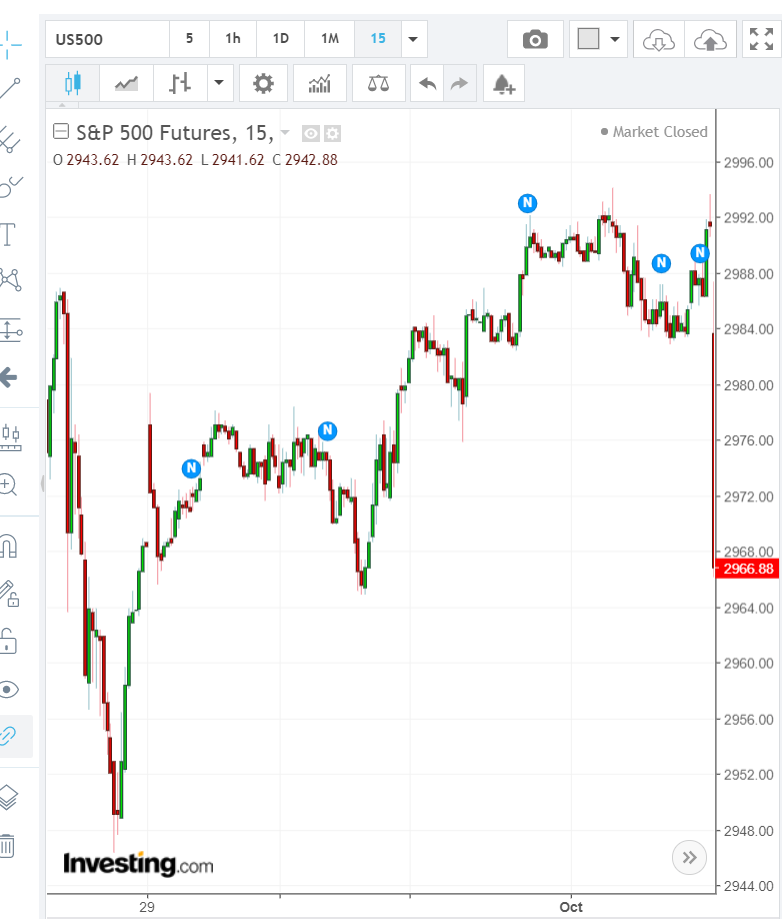

判断走平后继续上涨或下跌是否是一个加速运动
- 快速大幅上涨或下跌后，不填补真空，再次上涨/下跌，这个本身就是一种加速运动。在很多情况下，如果需要一个加速运动，
那么这个就是了。它的再次上涨和下跌的幅度可以很小。不需要超过前面的幅度。只要创新低或者新高就可以了。
因为真空没有填补，或者很快的填一下，这个不算填补。
- 这个和快慢极点的区别。它再次上涨的时候，没有拉回一些后，徘徊很久的动作，而是直接从高点上涨，这样形成了加速
- 以走平后，继续上涨为例，它如果上涨的时候，非常的小心。到了高点。拉回。再次接近高点后，走平一段时间，
然后才越过高点。那么这个就不是加速走势。这时就要看它越过后的速度和幅度。用两段走势来判断。
- 如果走势本身已经反转了，它会在接近高点后，走平。然后大跌。这个其实是大幅拉回接近高点后的走势。所以判断大势很重要。
但是另外一个角度看，判断大势并不困难。

图示：观察开盘的走势，它第一浪上涨涨了6个点。大幅拉回后，从拉回点算起，
也刚好6个点。但是它在顶部没有立刻拉回，而是停留了一分钟。这样已经比第一浪强了。这样就造成了反转。因为第一浪是
立刻拉回。所以第一至少和第一浪一样多，然后要停留或者拉回慢一些都可以。而它本身又是一个上涨走平再次上涨的样子，
形成了加速。



图示：这个走势要看两天前的走势了。它两天前，从最低点，快速上涨，连续涨了好几天。可以看到，它在最后，涨幅最大，然后再高点徘徊了好几个小时。
这个是前一天的晚上发生的。然后下来一下，但是没有到达下面的点。再次上去。开盘后，它很快的上涨。然后没有填补真空，在走平几分钟后，
再次上涨，上涨的时候，没有一个拉回后，缓慢的动作，而是直接上涨。它上涨的幅度虽然比较第一浪小，但是这个没有
填补真空，上涨前没有缓慢的动作已经构成了加速反转。而根据盘前走势，就是需要一个向上的加速动作。
它冲高后的位置正好填补了盘前的高点。因为盘前是从这个点跌下来的。然后开始下跌。要注意，它下跌速度看起来似乎很快，
实际上不快，和上涨速度一样。到了6：50，它下跌了4分钟，然后反弹，没有加速的走势。说明是要下跌的走势，
而不是上涨。如果是上涨的走势，它应该快速下跌后，出现加速走势。这样盘前和开盘后，都互相印证了。应该下跌。它下跌后，可以看到，
每一浪的上涨起点是2945.所以应该跌倒这个点以下。果然它跌倒了以下。

图示：第一浪是6：50开始的大涨。前面的小幅上涨其实是震荡的一部分，这个只有看盘前走势才清楚。
7：00冲高到了2939，立刻拉回，拉回的时候，走平，再次下跌。然后反弹，不到高点，就开始长时间走平。这样，这个走势虽然是，
上涨后，走平再次上涨。但是具体观察它的样子，它再次上涨时候，非常谨慎，所以不是一个加速走势。它仍然处于升势。

图示：这个不是任何走势，暂时没有地方放。